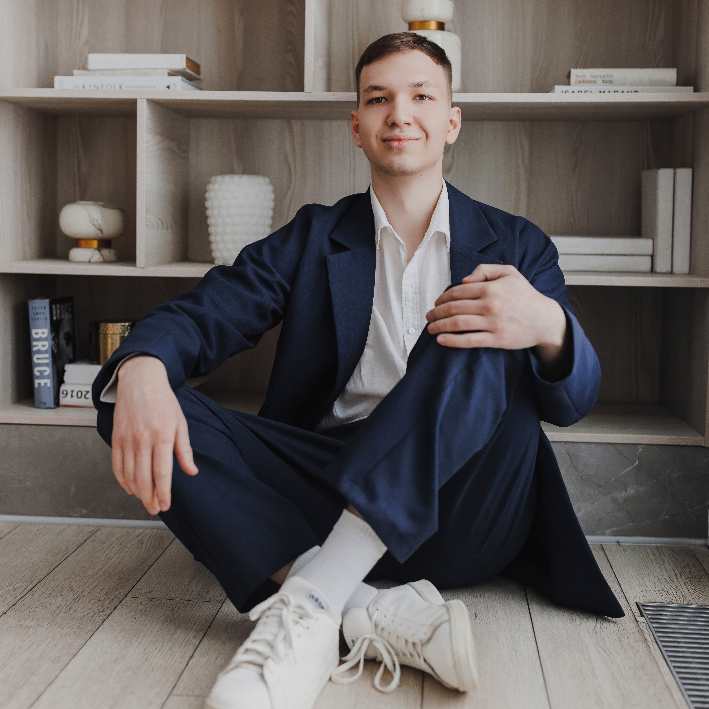
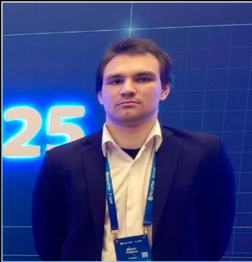
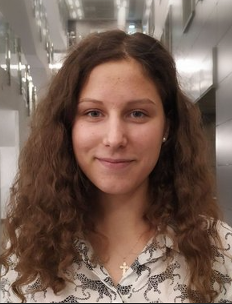

Готовность пройти ИИ-интервью
77,7%
точно или скорее пройдут
Скорее пройду44,4%
Точно пройду33,3%
Пока не могу сказать16,7%
Скорее не пройду5,6%
Он ускоряет первичный технический отбор кандидатов с помощью асинхронных видеоинтервью, адаптивных вопросов и автоматической оценки ответов.
−95% расходов
на первичный технический отбор
времени рекрутера
вместо нескольких часов команды
Календари, интервью и ручное заключение.
Эксперт подключается только к финалистам и спорным кейсам.
Рекрутеру нужен краткий вывод с доказательствами.
Кандидату важны понятный формат и полезная обратная связь.
Антифрод — сигнал для рекрутера, а не автоматический отказ.
интервью с рекрутерами
ответов кандидатов
точно или скорее пройдут
выбирают подробный разбор
Вопрос, расшифровка, код, объяснение оценки и переход к нужному таймкоду.
Блоки, вопросы и рубрики.
STT, кодинг и follow-up.
Вкладки, копирование, голоса и лица.
Баллы с объяснением.
Summary, score и таймкоды.

ИИ-инженер · платформа, репозиторий и сервер

ИИ-инженер · идеи и логика ИИ-оценки

ИИ-продакт · гипотезы и интерфейс